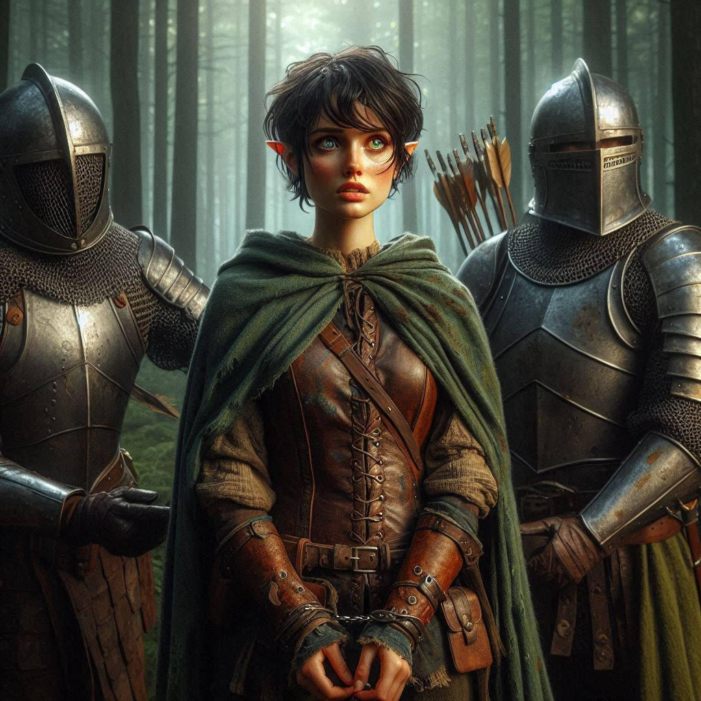
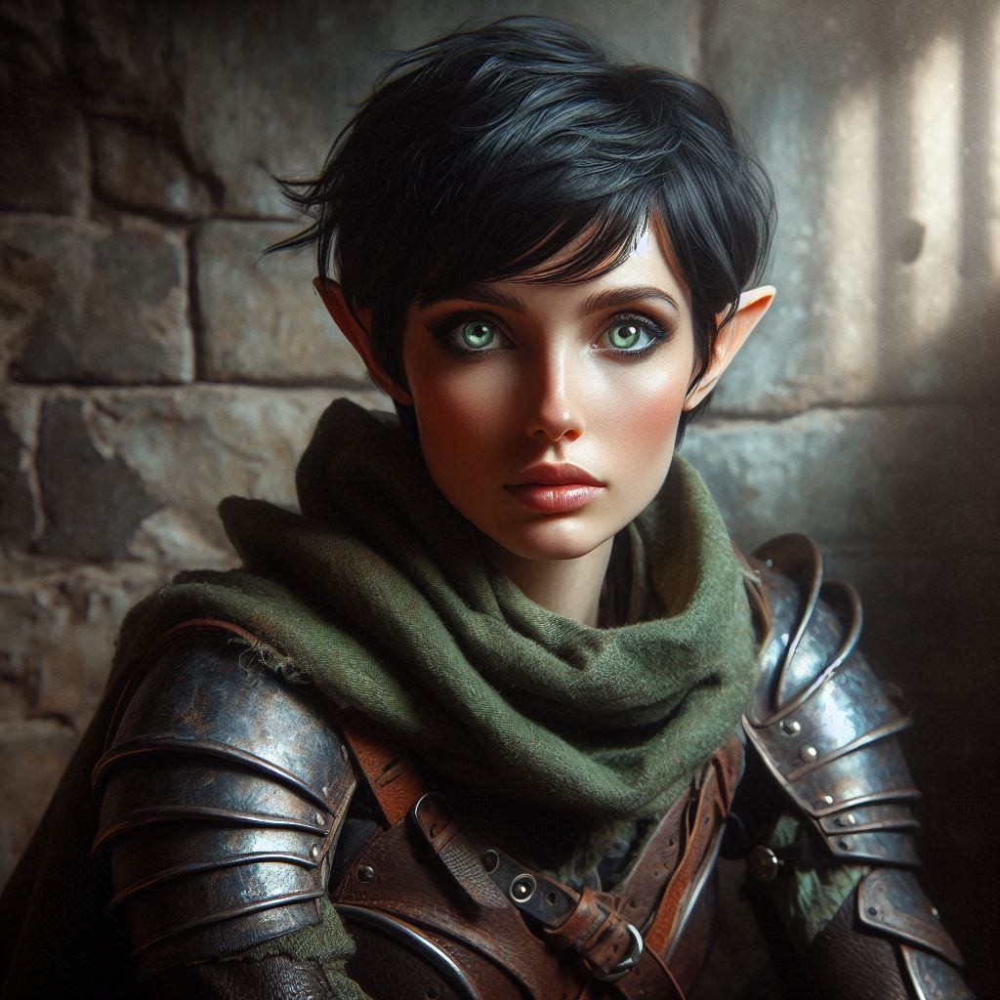

A Rebellious Stand
You stand in the dim light of Princess Hawthorn’s war tent, the canvas walls flickering with the soft glow of lanterns. The air is heavy with tension. Across from you, the Princess stares intently, her violet eyes sharp with impatience. Her regal armor glints in the firelight, and her command is clear: aid her in the perilous mission to Hemlock Caverns, where ancient magic and treacherous enemies await.
“I cannot follow you into the Caverns, Princess,” you say, your voice steady but resolute. “This mission is too dangerous, and your presence would risk the entire Kingdom of Yew. I came here for the map and to arrest a criminal, not to get tangled in court politics.”
A silence falls over the tent, broken only by the distant sound of wind sweeping through the camp. Hawthorn’s eyes narrow, her lips pressed into a thin line. The royal guard shifts uncomfortably at the entrance, sensing the growing tension.
“You would dare defy the crown’s command, Kira Coldspring?” Hawthorn’s voice is low, dangerous. “You are a ranger, bound by loyalty to this kingdom. I’m giving you the chance to aid me, to secure the future of Yew. Or would you prefer to abandon your duty, just like your Jorsh did when he betrayed us all?”
The mention of Jorsh stings, the old wound threatening to reopen, but you hold your ground. You’ve made your decision. You know the path to Hemlock Caverns is treacherous, and the Princess is unprepared for the dark forces lurking there. Her ambition clouds her judgment, and you cannot let her lead this charge.
“I will not be a pawn in this,” you reply, standing tall. “I swore to protect this kingdom, but I won’t follow you into certain death. Hemlock Caverns isn’t just another adventure—there’s something ancient and dangerous there, something none of us fully understand.”
Hawthorn’s eyes blaze with frustration. She takes a step toward you, her voice filled with regal authority. “If you refuse to aid me, I will find someone who will. But you—Kira—you will regret this defiance.”
You sense the royal guard moving closer, their armor clinking as they step forward, ready to intervene. But you don’t back down. “My mission is to stop Varis and bring Jorsh to justice,” you say, meeting the Princess’s gaze. “Not to fall in line behind your ambition.”
The silence is deafening. For a moment, you think Hawthorn might strike you, but instead, she turns on her heel with a huff, walking briskly toward the entrance of the tent. Her voice calls out to her guards, sharp and final: “Seize her.”
Before you can react, two guards grab your arms, their grip like iron. You try to pull away, but it’s no use. You’ve made your choice, and now you’ll face the consequences.
“Princess!” Liora, Hawthorn’s court sorceress, steps forward, her dark robes sweeping the ground. “This is not necessary. Kira has proven her loyalty to the Kingdom before. We needn’t treat her like a criminal.”
Hawthorn pauses, her back still to you. “She defies the crown. There are consequences for disobedience, sorceress. She will face justice in Yew.”
Liora’s gaze flickers to you, a silent apology in her eyes. But she doesn’t press the matter further.
The guards drag you out of the tent, your boots kicking up dust as you stumble across the camp. Around you, soldiers of the royal army glance over, curious but unwilling to intervene. You feel their eyes on you, judging, as you’re pulled toward a carriage awaiting your transport back to the capital.
Your heart races. The realization that you’re being arrested for insubordination hits you like a wave. The mission, the map, Varis—everything you were working toward is slipping out of your grasp. You glance at the shadowed treeline at the edge of the camp, knowing that freedom lies in that direction. But escape is impossible now. You are bound.
The journey to Yew is long and silent, the weight of your decision pressing down on you. Each rattle of the carriage wheels is a reminder of what’s to come. The dungeons. The trial. Perhaps even execution.
You close your eyes, trying to calm the storm of thoughts swirling in your mind. Would Jorsh have made a different choice? Would Baider have told you to fight harder, or to be more cautious? In the end, none of it matters now. You acted on what you believed was right. And that has to be enough.
The grand towers of Yew come into view, looming over the horizon. The capital city is majestic, its spires reaching into the clouds, but to you, it feels cold and distant. The carriage slows as it approaches the palace gates, where guards escort you inside the marble halls.
You barely have time to take in the grandeur before you’re led down into the depths of the palace, into the dark, damp stone of the dungeons. The air is cold, the walls slick with moisture. The sound of heavy iron bars clanking shut echoes in the chamber as you are thrown into a cell.
And just like that, the world outside is cut off. The mission forgotten. You’re alone in the dim light of the dungeon, waiting for whatever fate the Princess decides.
As you sit there, thoughts racing, you feel a strange calm wash over you. Even if this is the end of your journey, you know you stood by your principles. No one can take that from you.